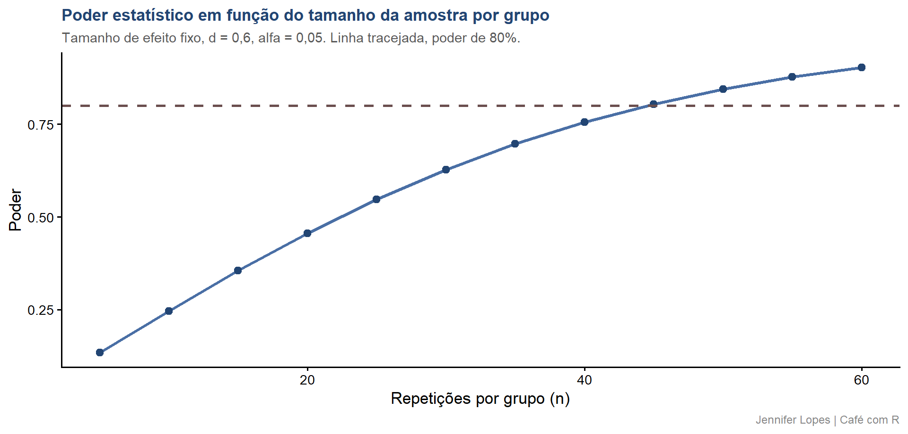
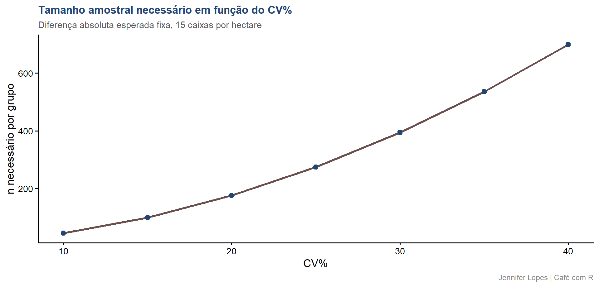

Aula 45. Power analysis
Por que seu experimento não deu significativo, o que é poder estatístico, como interpretar e quando calcular
Acompanhe o Café com R
Que cada gole desperte uma nova ideia.
Que cada script abra uma nova conversa.
Que o Café com R se torne um ponto de encontro nosso.
SITE OFICIAL > https://jenniferlopes.github.io/meu_site/
Objetivos da aula
- Definir poder estatístico e sua relação com o erro tipo II
- Reconhecer os quatro elementos que determinam o poder de um teste
- Calcular o tamanho amostral necessário para um teste t e para uma ANOVA
- Entender o impacto do CV% e do delineamento experimental sobre o poder
- Interpretar corretamente um resultado não significativo
- Evitar os erros mais comuns no uso da análise de poder
Bloco 1
Os Quatro Elementos do Poder
Poder estatístico e erro tipo II, definição
- O poder estatístico é a probabilidade de rejeitar \(H_0\) quando \(H_1\) é, de fato, verdadeira.
\[\text{Poder} = 1 - \beta\]
\(\beta\) é a probabilidade do erro tipo II, não detectar um efeito que realmente existe.
Um experimento com poder baixo tem baixa probabilidade de detectar o efeito real, mesmo quando esse efeito existe na população estudada.
Important
Atenção: um resultado não significativo não significa que o efeito não existe. Pode significar apenas que o experimento não teve poder suficiente para detectá-lo.
Os quatro elementos do poder
| Elemento | Símbolo | Papel |
|---|---|---|
| Nível de significância | \(\alpha\) | Probabilidade aceita de erro tipo I |
| Tamanho de efeito | \(d\) ou \(f\) | Magnitude da diferença que se deseja detectar |
| Tamanho amostral | \(n\) | Número de repetições ou observações |
| Poder | \(1-\beta\) | Probabilidade de detectar o efeito, se ele existir |
- Fixados três desses quatro elementos, o quarto fica determinado. O planejamento experimental consiste, exatamente, em usar essa relação antes da coleta de dados.
Código: poder em função do tamanho da amostra
Gráfico: poder x tamanho da amostra

Bloco 2
Cálculo do n para o Teste t
A fórmula do tamanho amostral, conceito
\[n = \left(\frac{z_{1-\alpha/2} + z_{1-\beta}}{d}\right)^2 \times 2\]
- \(d\) é o tamanho de efeito de Cohen, a diferença esperada entre as médias, padronizada pelo desvio padrão:
\[d = \frac{\mu_1 - \mu_2}{\sigma}\]
- Quanto menor o tamanho de efeito esperado, maior o tamanho amostral necessário para atingir o mesmo poder.
Exemplo prático, dois programas de adubação foliar
Contexto: planeja-se um experimento em citros para comparar dois programas de adubação foliar quanto à produtividade, em caixas por hectare.
Com base em dados de safras anteriores, espera-se uma diferença média de 15 caixas por hectare, com desvio padrão estimado de 25 caixas por hectare.
\[d = \frac{15}{25} = 0{,}6\]
Código: dimensionamento do n com pwr.t.test
Output: n necessário
# A tibble: 1 × 3
d n_por_grupo poder_desejado
<dbl> <dbl> <dbl>
1 0.6 45 0.8- São necessárias aproximadamente 45 parcelas por programa de adubação para atingir 80% de poder na detecção da diferença esperada. Um experimento com menos repetições que esse valor tem baixa probabilidade de confirmar estatisticamente o efeito, mesmo que ele exista.
O impacto do CV% sobre o n necessário
O CV% afeta diretamente o desvio padrão da variável, e, portanto, o tamanho de efeito \(d\), para uma mesma diferença absoluta esperada.
Quanto maior o CV%, maior o desvio padrão, menor o \(d\), e maior o tamanho amostral necessário para manter o mesmo poder.
Código: n em função do CV%
media_referencia <- 250
diferenca_esperada <- 15
cv_seq <- seq(10, 40, by = 5)
resultados_cv <- map_dfr(cv_seq, function(cv) {
sd_estimado <- (cv / 100) * media_referencia
d_estimado <- diferenca_esperada / sd_estimado
n_calculado <- pwr.t.test(d = d_estimado, sig.level = 0.05,
power = 0.80, type = "two.sample")$n
tibble(cv = cv, d = d_estimado, n = ceiling(n_calculado))
})Gráfico: n x CV%

Bloco 3
Cálculo do n para ANOVA
A fórmula de Cohen para ANOVA, o f de Cohen
\[f = \sqrt{\frac{\sum_{i=1}^{k}(\mu_i - \bar{\mu})^2 / k}{\sigma^2}}\]
| Magnitude | Valor de f | Interpretação |
|---|---|---|
| Pequena | 0,10 | Diferença sutil entre os grupos |
| Média | 0,25 | Diferença perceptível na prática |
| Grande | 0,40 | Diferença marcante entre os grupos |
- O f de Cohen generaliza o d para mais de dois grupos, medindo a dispersão das médias dos grupos em torno da média geral, padronizada pelo desvio padrão dentro dos grupos.
Exemplo prático, ensaio com quatro doses de biofertilizante
Contexto: planeja-se um ensaio com quatro doses de um biofertilizante, avaliando a produtividade em citros.
Com base em experimentos anteriores com produtos similares, espera-se um tamanho de efeito médio a grande entre as doses, \(f = 0{,}35\).
Código: dimensionamento do n com pwr.anova.test
Output: n necessário
# A tibble: 1 × 4
k f n_por_grupo poder_desejado
<dbl> <dbl> <dbl> <dbl>
1 4 0.35 24 0.8- São necessárias aproximadamente 14 parcelas por dose para atingir 80% de poder. Esse valor é o ponto de partida para o dimensionamento de campo, antes de considerar restrições práticas de área e mão de obra.
Código: poder real com o número de repetições disponível
Output: poder real
# A tibble: 1 × 2
n_disponivel poder_real
<dbl> <dbl>
1 4 0.148- Com apenas 4 repetições por dose, restrição comum de área experimental, o poder real fica bem abaixo de 80%. Um resultado não significativo nessas condições é esperado, mesmo que o efeito das doses exista de fato.
Bloco 4
Delineamento e Poder
O que muda com o DBC em relação ao DIC
No Delineamento Inteiramente Casualizado, toda a variação ambiental não controlada entra no resíduo, aumentando o desvio padrão e reduzindo o poder do teste.
No Delineamento em Blocos Casualizados, parte dessa variação ambiental é absorvida pelo efeito de bloco, quando o critério de blocagem captura de fato um gradiente relevante, como fertilidade do solo ou umidade.
O resíduo do DBC tende a ser menor que o resíduo do DIC, o que aumenta o poder para o mesmo número de parcelas.
Eficiência relativa do DBC em relação ao DIC
A eficiência relativa compara o quadrado médio do resíduo que seria obtido em um DIC ao quadrado médio do resíduo realmente obtido no DBC, para o mesmo experimento.
Um valor de eficiência relativa acima de 1 indica que o DBC reduziu a variabilidade residual em relação ao que se obteria em um DIC, aumentando o poder do experimento sem aumentar o número de parcelas.
Important
Atenção: blocar por um critério que não captura variação ambiental real não aumenta o poder, apenas reduz os graus de liberdade do resíduo, o que pode até reduzir o poder do teste.
Bloco 5
Análise de Poder a Posteriori
Interpretando um resultado não significativo
Diante de um resultado não significativo, três explicações são possíveis, e não podem ser distinguidas apenas pelo valor de p:
O efeito realmente não existe, e a conclusão de ausência de diferença está correta.
O efeito existe, mas o experimento não teve poder suficiente para detectá-lo, dado o tamanho amostral e a variabilidade observados.
O efeito existe, mas a variabilidade dos dados foi maior que a esperada no planejamento, reduzindo o poder efetivo do experimento.
Por que calcular o poder a partir do efeito observado é circular
Calcular o poder de um teste usando o próprio tamanho de efeito observado nos dados que geraram um resultado não significativo sempre produz um valor de poder baixo, por construção matemática.
Isso ocorre porque um resultado não significativo, com amostra pequena, tende a corresponder a um efeito observado pequeno, e um efeito pequeno sempre implica poder baixo, independentemente do poder real do experimento.
Important
Atenção: essa prática, conhecida como poder pós-hoc observado, não fornece informação além do próprio p-valor, e é desaconselhada pela literatura metodológica.
Código: poder a priori dado o n usado
Output: poder a priori
# A tibble: 1 × 3
n_usado d_esperado poder_a_priori
<dbl> <dbl> <dbl>
1 10 0.5 0.185- O cálculo correto usa o tamanho de efeito esperado antes da coleta, definido a partir de literatura ou experimento piloto, e não o efeito observado no próprio conjunto de dados que resultou em não significância. Com apenas 10 repetições por grupo e um efeito de magnitude média, o poder disponível já era baixo antes mesmo da coleta dos dados.
Bloco 6
Erros Comuns
Erro comum 1, calcular poder pós-hoc a partir do efeito observado
Reportar o poder pós-hoc observado como justificativa para um resultado não significativo é um raciocínio circular, que não acrescenta informação além do p-valor já obtido.
A alternativa correta é calcular o poder a priori, com o tamanho de efeito esperado antes da coleta, e reportar essa limitação de forma transparente.
Erro comum 2, ignorar o dimensionamento e perceber a falta de repetições só depois
Iniciar a coleta de dados sem calcular o tamanho amostral necessário leva, com frequência, a experimentos subdimensionados, que não conseguem detectar efeitos reais de magnitude moderada.
O dimensionamento deve ser a última etapa do planejamento, antes da instalação do experimento em campo, não uma verificação posterior aos resultados.
Erro comum 3, aumentar repetições após ver o resultado até obter significância
Adicionar novas repetições após observar um resultado não significativo, e repetir o teste até obter p menor que 0,05, infla o erro tipo I além do nível nominal declarado.
O tamanho amostral deve ser definido antes da coleta, com base no poder desejado, e mantido fixo até a análise final.
Resumo: power analysis
| Elemento | Função no R | Uso central |
|---|---|---|
| Poder para teste t | pwr.t.test() |
Dimensionar n para comparar dois grupos |
| Poder para ANOVA | pwr.anova.test() |
Dimensionar n para comparar múltiplos grupos |
| Tamanho de efeito, d | Diferença padronizada pelo desvio padrão | Teste t |
| Tamanho de efeito, f | Dispersão das médias padronizada | ANOVA |
| Poder a priori | Calculado antes da coleta | Interpretar resultados não significativos |
Obrigada!

Continue praticando e explorando.
Esta aula é parte do projeto Café com R. É open source. Use, compartilhe e adapte.
Siga o Café com R
Que cada gole desperte uma nova ideia.
Que cada script abra uma nova conversa.
Que o Café com R se torne um ponto de encontro nosso.
SITE OFICIAL > https://jenniferlopes.github.io/meu_site/

Jennifer Lopes | Café com R